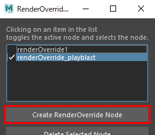
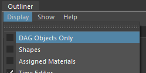
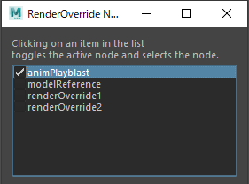

Render Override Node¶
概要¶
RenderOverrideを起動すると基本的な情報(テキスト)が表示されますが、より詳細に制御したい場合は RenderOverrideノード を作成し、各種アトリビュートを設定します
RenderOverride ノードの作成¶
方法1
Shelfから、 NodeEditor アイコンをクリックし、エディタを立ち上げます

Create RenderOverride Nodeボタンをクリックすると、ノードが作成されます
方法2
次のMELコマンドを実行します
createNode "renderOverride";
ノードの確認方法¶
RenderOverrideノード(DGノード)が作成されたことを確認します
Outliner で確認する
Outlinerでは、メニューの
Display > DAG Objects Onlyのチェックを外してください
NodeEditor で確認する
NodeEditorのノードのリストに、作成されたノードが表示されます。¶
Important
RenderOverrideノードは、Maya®シーンの中で複数作ることができますが、ビューに適用されるノード(“アクティブなノード”)は1つだけです。
ビューに適用されるノードは次のように決まります
RenderOverrideノードを、名前順に
Enableアトリビュートにチェックが入っているかどうかを確認します最初に
Enableアトリビュートにチェックが入っていたノードの情報が適用されますEnableにチェックが入っているノードが1つも無ければ、デフォルトのテキストが表示されます。
NodeEditorを使用すれば、選択したノード以外の
Enableアトリビュートは off になるので、アクティブなノードを1つに限定することができます「 レイアウト用 」, 「 Playblast用 」のように、複数のノードを目的に応じて使い分けることができます。